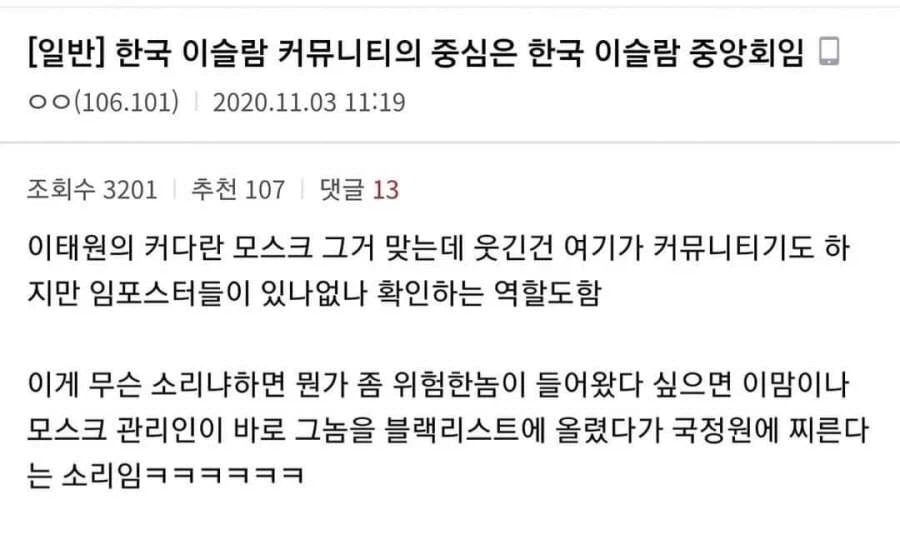
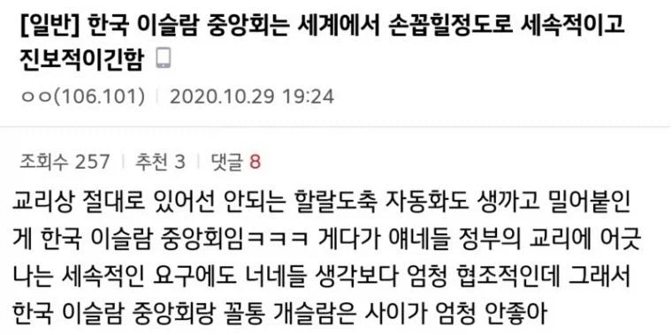
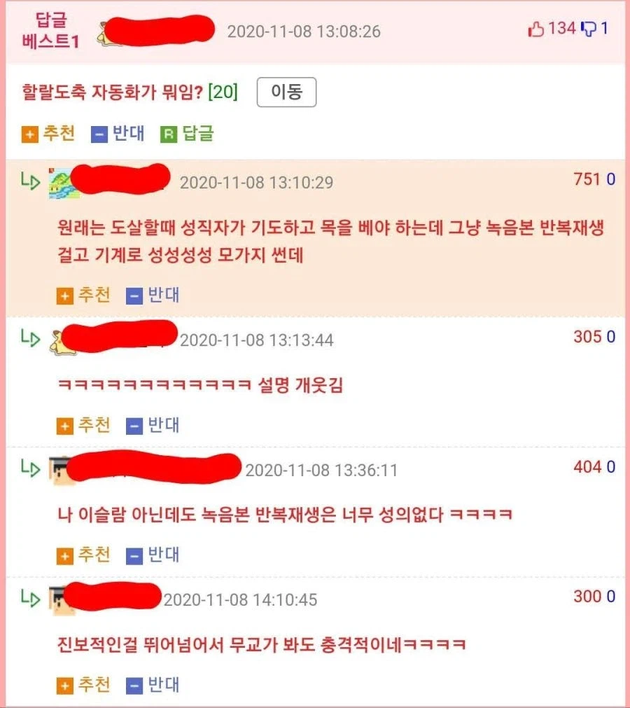

실제로 붉닭볶음면에 쓰이는 닭들은
옆에서 스피커로 기도문 틀어놓고 가스실 보낸다고 한다



실제로 붉닭볶음면에 쓰이는 닭들은
옆에서 스피커로 기도문 틀어놓고 가스실 보낸다고 한다
어차피 개드립에서 우리민족끼리 주창하면서 사이버 파르티잔 운동 하시는 분들은 세속이고 그런 거 신경 안 씀
그냥 순혈 아리랑인의 피를 더럽히는 외국인이 싫은 거임
지랄ㄴ 문화에 감화된 외국인에겐 아무도 지랄안함
문화에 감화된이 뭘 뜻하는건데. 지금도 외노자들 잘만 한국에서 일해서 먹고 사는데 폭동도 안하고.
개드립에서 외국인문제 뜰때 쌍욕하는건
문화적응 안하고 지들만의 문화인정하라며 특권달라고 할때나 범죄저지른 새끼일때야
뭔 아리랑 피 ㅇㅈㄹ
모든 무슬림을 근본주의 광신도라고 싸잡아 일반화 중인거 아님 지금 ㅋㅋ?
그건 극단에 있는거고 주류의견은 집단화된 무슬림을 경계하고 욕하는거란다
또 이말 듣고 그거랑 뭐가 다르냐 할거같아 추가로 얘기하자면
집단화한 무슬림들의 모습은 한국뿐아니라 전세계적으로 싫어한다
지금은 20~30만명대라 괜찮지만 100만 넘어가면 걷잡을 수 없게 됨.
국내에서 제일 비율 높은 이슬람 국가 외국인인 우즈벡이 전체 외국인의 4%에 10만명인데 뭔 30만같은 소리임
•대한민국 전체 무슬림 인구: 약 30만 ~ 32만 명 (대한민국 전체 인구의 약 0.4%)
• 외국인 무슬림: 약 26만 ~ 28만 명 (법무부 출입국 및 연구 자료 기준, 전체 체류 외국인의 약 11.2% 수준)
• 한국인 무슬림: 약 3만 ~ 6만 명 추정 (개종 및 귀화자 포함)
• 주요 출신국: 인도네시아, 파키스탄, 우즈베키스탄, 방글라데시, 이란 등 아시아 및 중앙아시아 지역
개많네;;
이슬람국가가 우즈벡만 있는게 아니니까?
100만 넘어가면 200만 넘어가면 걷잡을 수 없다고 얘기하겠지
정신차려라 트로이목마라고 생각하고 항상 경계를 늦추지 말것
어느 추운 겨울날, 뱀 한마리가 굴 속에서 잠을 자고 있었다.
그러다 추위를 피해 굴 앞에 도착한 고슴도치가 뱀에게 말했다.
"뱀 님, 부탁이니 잠깐만 몸을 녹이게 해 주세요."
마음씨 착한 뱀은 고슴도치를 굴 안으로 들여보내 주었다.
하지만 고슴도치의 가시가 계속 몸을 찌르는 바람에 뱀은 도저히 참을 수가 없었다.
"고슴도치야, 네 가시가 따가워서 견딜 수가 없어. 미안하지만 내 집에서 나가줄래?"
그러자 고슴도치는 화를 버럭 내며 말했다.
"뭐라고? 정 불편하면 네가 나가. 난 하나도 불편하지 않으니까."
소닉 새끼 인성 보소
고숨도치는 호저와 달리 가시를 눕힐 수 있다=해당 고슴도치는 굴을 차지할 생각으로 들어왔다
내가 이슬람에 대해 상당히 우호적인 편이라 생각하는데(아프리카 동남아 쪽은 착함)
사원은 반대하는 이유가 기도 시간 마다 흘러 나오는 노래와 가르침 설명하는 소음 때문임
한국 주택 단지 내에 사원 세우면 백퍼 얼마 안 가서 싸움 크게 날 거다
방음부스처럼 만들면 안댐?
개슬람은 극소수만이 존재할때만이 정상적이다
애초에 2000년대 이전 한국 이슬람은 힙스터 한국인들이 주류인거 아님? 당연히 한국인이 주류니까 한국인 입맛에 맞게 운영 했겠지 근데 앞으로 이슬람 인구가 늘어난다면 간부진이 한국인으로 유지가 되겠냐고 외노자 1세대나 2세대들이 차지할텐데 그때도 '세속적'으로 남을거 같냐
정확히 반대임. 2000년 이전은 주로 외교부 연관 외국인 이맘 중심이고, 최근 한국인 교리공부 수준이 높아지면서 한국인이 메인이 됨.
후.... 걍 뇌피셜로 혐오 하면 되는데 왜 팩트 주입하냐고 화낼거 같은데
뭐 외국인 노동자들 모여 사는건 당연한 수순이고 노동인구 줄어 들어서 노동자 들여오는 입장인지라 사실 모스크 짓니 못짓니 하는건 상징성일 뿐이지
저러는게 싫으면 아예 입국부터 거부하는것 말곤 방법이 없음
외노자 통제를 목적으로 한다면 뭉치게 놔두면 안된다가 아니라 오히려 거주제한을 걸어서 격리 시도를 하는게 일반적이고
업종제한을 걸어서 사실장 거주지 제한을 하던가 아예 거주제한을 걸던가 해야 하는데 우리나라 정도쯤 되면 그러기가 쉽지도 않고 아쉬워서 노동자 수입하는 나라에서 그러면 다 다른데 가버라기도 하고
유럽 잡아먹힌거 보고도 교훈 못얻으면 우리도 똑같이 무너지는거
그래서 현재 국내 무슬림들과 달리 중동쪽은 한국 입국하기 까다로움
유럽에도 경계의 목소리가 있었는데 시간만 끌다 저지경이 된 이유를 이 글에서도 찾아볼 수 있음
항상 언더도그마 자존감 쌀먹단이 문제임
우리집 개는 안물어요~~
우리가 수용 가능한 이슬람은 통제 가능한 이슬람이다
한국 이슬람은 다르다! 이런소리가 제일 의미가 없음. 이슬람이 얌전하면 걍 쪽수가 부족한거임 쪽수 좀 붙으면 바로 본성나오는데 ㅋㅋ
아직 소수니까 ㅡㅋㅋ
이거 좋네 이런식으로 한국 이슬람은 특화시켜서
개지랄맞은 이슬람은 발도 못들이게 계속 밀어붙여야함
메뚜기와 황충은 dna 가 동일하다
홀뤼셋 이것도 맞는말이라 반박할 수 없다
살다살다 이슬람맘도있네
저 자동화는 알라도 경악하겠다 ㅋㅋㅋ
개소리임 유럽에서도 대규모 이민받기전에는 이렇지 않았어
유럽은 2대 대전 이후부터 계속 문제가 있어왔고
그 때문에 이슬람에 대한 두려움과 혐오를 뜻하는 '이슬라모포비아'란 단어가 별도로 있음
응 안속아~ 이미지 세탁하려는거 안통해
대가리 수 모이면 본색을 들어냄
그러다 근본주의/원리주의 카드 한번 꺼내면 돌이킬 수 없음
저것도 2020년글임
인구수적을때
ㅋㅋㅋㅋㅋㅋ 욕하는애들은 관심없이 편하게 혐오하고싶어서 제대로 알아보자도않고 상상력 동원해서 댓글쓰는데
관심있는애들이 다 논리로 반박하는게 존나웃김 ㅋㅋㅋㅋ
이런거 올리는 새끼들은 그냥 중동으로 좀 꺼져라 제발
전세계에서 좆슬람 병신들이 설치는걸 보고도 여긴 다를거라고 계속 지랄하네 씨발
그것도 적을때 기준이지 바퀴벌레마냥 많아져봐라
저기에 페미를 풀어
저것도 벌써 6년전임. 분위기 확 바뀌어도 이상하지 않을 기간임
ㅋㅋ그래봤자 비율 늘어나면 바로 참수민족 본색 들어냄 절대 들이면 안됌 ㅇㅇ
그래서 뭐? 결국 할랄 쳐먹는데
세속적인게 아니라 더 무서움
저 한국이슬람중앙성원 설립된 배경 자체가 중정이 밀약해서 지어진거니 현 국정원과도 친할 수밖에 없긴 함.